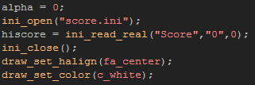
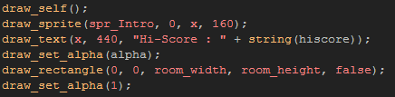
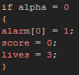
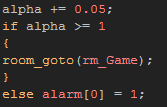

Tutorial
Page 10 of 13
Adding An Introduction
All games have a title screen with an introduction graphic of some sort and options and things, and our breakout clone is not going to be any different!
To start with we need to load in two new sprites from our assets folder, one for the title and another for the play button, so create the sprites and call them appropriate names, then load in the "Titles" sprite
and the "play" sprite.
Next, create an object and call it "obj_Intro" or something equally appropriate and assign it the "play" sprite. Now, give it a create event and add in this code:

You should recognise the draw codes from a previous section as well as the way of assigning a variable to a value ("alpha"), but there are some new things to learn here! Obviously, when playing a game, one of the main
challenges is to beat a previous high score, and so we are going to have our game maintain the highscore all the time (even if you exit and restart!) through the use of ini files. These files are simple to use, and
great for holding small amounts of information. What the above code does, is open one (creating it if it doesn't already exist) and read a value from it (if that value does not exist the default value of 0 is returned) assigning
it to the variable "hiscore" to be displayed on the screen.
Next you need to add a Draw Event with the following code:

This code will draw the play button, draw the highscore and titles, and draw a basic transition effect when the button has been pressed to start the game. And the button itself? For that we will need an alarm and
a mouse event, so add a Mouse Pressed Event into the object now and place this code:

The above code will check the "alpha" variable and if it is 0 it will run the alarm as well as set the intial score and lives variables. We do this check to make sure that the event will only be run once, even if the player presses
the button more than once. Now create an alarm [0] event and it should have the following code:

This final bit of code will repeat, changing the alpha variable so that the transition effect is created before the room is changed to the game room when the alpha variable reaches 1.
That's the introduction taken care of, now to add the finishing touches to the game itself!
Click on the Next button to go to the next page of the tutorial.